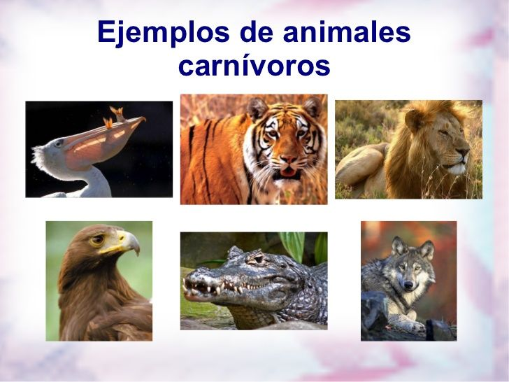

carnivoros
Los carnívoros son un grupo de mamíferos que se alimentan, completa o parcialmente, de carne. Poseen dientes especializados, como colmillos prominentes y molares carnasiales para cortar carne.

titulo herbivoros omnivoros